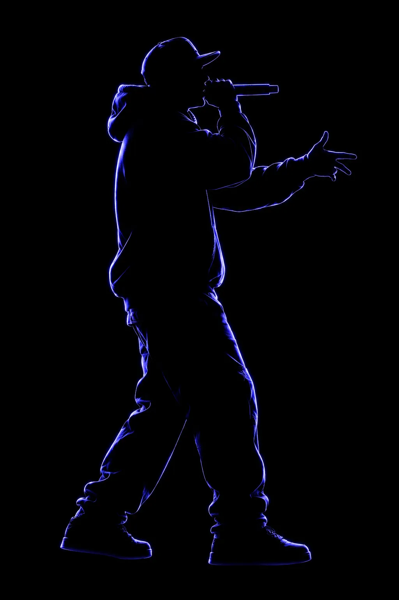
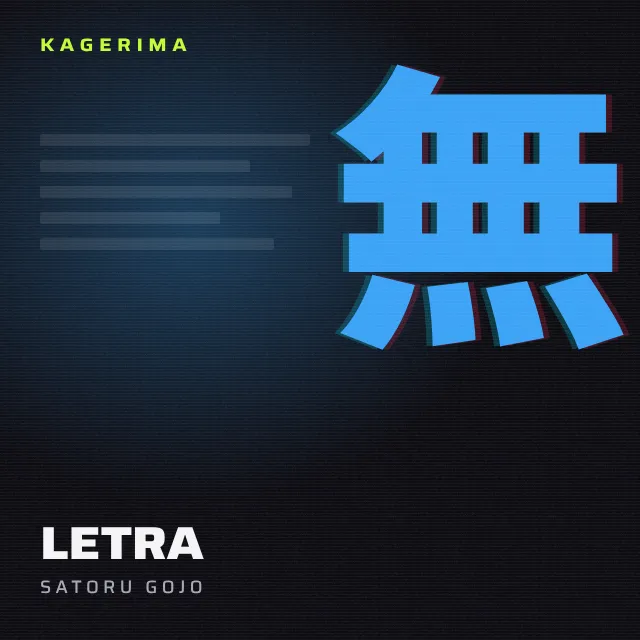
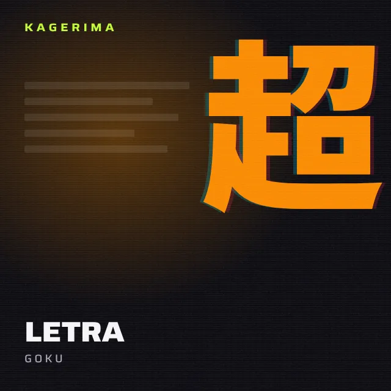
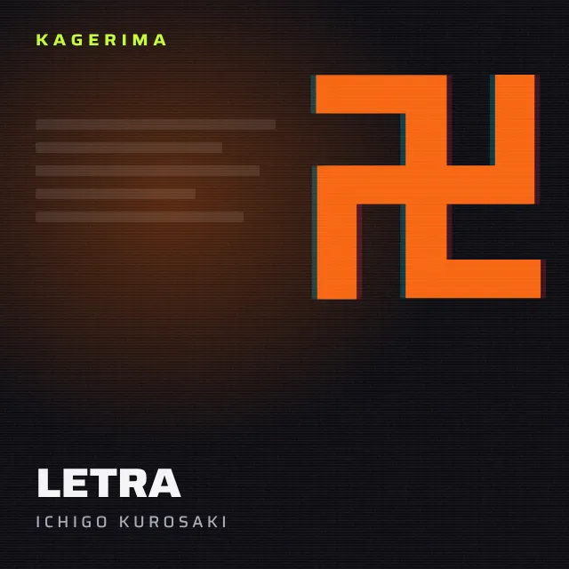
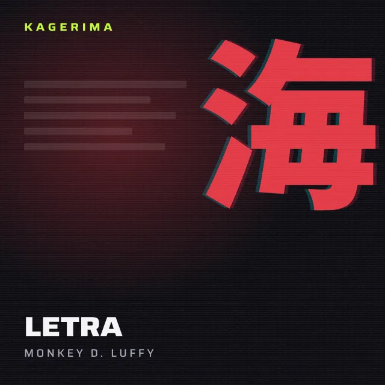
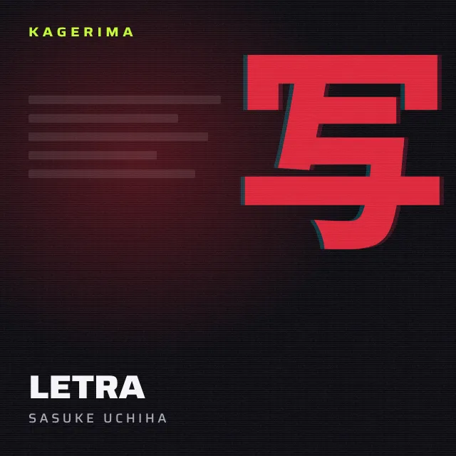
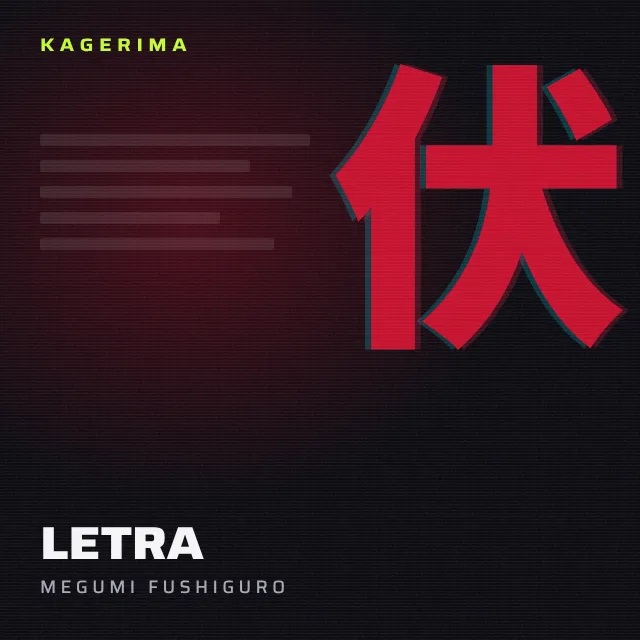

影 + rima Canal de rap geek
Rap de anime com a sombra de cada personagem.
Naruto, Jujutsu Kaisen, One Piece, Bleach e Dragon Ball: cada rap nasce da história, do poder e do lado escuro de um personagem. Escolha o seu anime e o site vira dele.
Seu anime:
As sombras que já ganharam rima
Entre pela sua obra.
Escolha um anime: as cores, o kanji, a textura e a ordem dos raps mudam para ele, e o site lembra da sua escolha na próxima visita.
01 Seis sombras
Role e escolha a sombra que vai rimar.
Satoru GojoVazio Infinito
O mais forte não pede licença: cada verso fecha o domínio e deixa o adversário sem espaço.
GokuAlém do limite
Um treino que nunca acaba: o beat sobe de nível junto com a transformação.
Ichigo KurosakiBankai
A espada ganha nome no refrão: quando o grave entra, a liberação acontece.
Monkey D. LuffyRei dos Piratas
Liberdade em forma de rima: o sonho do chapéu de palha virando refrão de navio.
Sasuke UchihaSharingan
Olhos que copiam tudo e um caminho de vingança contado verso a verso.
Megumi FushiguroDez Sombras
Dez sombras, dez rimas: cada shikigami entra no beat como uma invocação.
02 Lançamentos
Os raps, por anime.
Filtre pelo seu anime. Toque na capa para ouvir aqui mesmo, sem sair da página. Faixas de exemplo até o canal publicar a lista oficial.
Nenhum rap com esse nome ainda. Vote no personagem ou encomende o seu.
03 Números
Quem ouve, volta para a próxima sombra.
Painel do canal por personagem. Os valores abaixo são de exemplo e serão trocados pelos números oficiais do YouTube e do Spotify.
raps no site, organizados em6sombrasde 5 animes diferentes
04 Parcerias
Encomende o rap do seu personagem.
Para canais, artistas, marcas e eventos geek. Cada formato tem escopo, prazo e entregas combinados antes de começar.
Rap encomendado
Personagem à sua escolhaO personagem que você ama, com a história respeitada do primeiro ao último verso.
Pesquisa do arco, letra, beat, gravação e mixagem. Você aprova a letra antes da gravação.
Collab entre canais
Feat · cypherDuas sombras no mesmo beat: feat, cypher ou batalha temática.
Definimos tema, divisão de versos e lançamento conjunto, com crédito e link para os dois canais.
Marcas e eventos geek
Publi · jingle · palcoSua marca falando a língua de quem assiste anime, sem cara de propaganda.
Publi integrada ao rap, jingle geek para campanha e apresentação em evento ou convenção.
05 Como funciona
Da ideia ao lançamento, em cinco passos.
Cada passo termina com uma entrega que você aprova. Nada é gravado sem a sua letra aprovada.
Passo 01 Grátis
Conversa
Personagem, arco, clima e uso do rap: vídeo, campanha, evento.
Entrega proposta com prazo e valor.
Passo 02
Letra
Pesquisa do anime e escrita com as referências que o fã reconhece.
Entrega letra para aprovação.
Passo 03
Beat
Instrumental no clima da obra: épico, sombrio, acelerado ou melancólico.
Entrega prévia do beat.
Passo 04
Gravação e mix
Voz gravada, mixada e masterizada para YouTube, Spotify e redes.
Entrega faixa final em alta.
Passo 05
Lançamento
Data combinada, capa, descrição com links e divulgação cruzada.
Entrega faixa no ar e relatório de plays.
06 Comparativo
Qual formato combina com você.
O que entra em cada formato, lado a lado. Escopo final, prazo e valor saem na proposta, depois da conversa.
| Inclui | Rap encomendado | Collab | Marca ou evento |
|---|---|---|---|
| Letra aprovada antes de gravar | Sim | Sim | Sim |
| Beat no clima da obra | Sim | Sim | Sim |
| Divisão de versos entre artistas | Não | Sim | Opcional |
| Menção à marca na letra | Não | Não | Sim |
| Clipe animado | Opcional | Opcional | Opcional |
| Lançamento nos dois canais | Não | Sim | Opcional |
| Relatório de plays | Sim | Sim | Sim |
| Apresentação ao vivo | Não | Não | Opcional |
| Próximo passo | Montar pedido | Propor collab | Falar de marca |
Da sombra à rima.
Todo personagem tem um lado que a tela não mostra inteiro. A KAGERIMA escreve a partir dele: o medo, a perda, a escolha que mudou a história.
O que guia cada rap
Respeito à obra
Cada verso tem fonte no anime ou no mangá.
Rima com história
Referência que o fã reconhece, não lista de golpes.
Beat que conta
O instrumental muda junto com o arco do personagem.
Voz própria
Interpretação com a intensidade de quem viveu a cena.
Qualidade de estúdio
Mix e master pensados para fone e caixa de som.
Aviso de spoiler
Quem ainda não chegou no arco é avisado antes do play.
Comunidade
O próximo personagem é escolhido junto com quem ouve.
07 Letras
Cada verso, com a referência.
Letras completas com nota de onde vem cada rima: episódio, capítulo ou cena. Para cantar junto e pegar o que passou batido.

Rap de Satoru: letra e referências
Ver letra
Rap de Goku: letra e referências
Ver letra
Rap de Ichigo: letra e referências
Ver letra
Rap de Luffy: letra e referências
Ver letra
Rap de Sasuke: letra e referências
Ver letra
Rap de Megumi: letra e referências
Ver letra
08 Dicionário
Os doze kanjis da arte do canal.
Cada coluna do banner é um anime. Passe o mouse, toque ou use o teclado para ver a leitura, o significado e de onde vem cada símbolo.
- 01 · Jujutsu Kaisen
Kanji 無, Vazio, nada
Leitura: mu
Primeiro kanji de 無量空処, o domínio de Gojo: o Vazio Infinito.
- 02 · Dragon Ball
Kanji 超, Além, super
Leitura: chō
O 超 de Super Saiyajin: passar do próprio limite.
- 03 · Bleach
Kanji 卍, Giro, símbolo budista
Leitura: ban (manji)
Metade de 卍解, Bankai. Símbolo budista de sorte, sem relação com o símbolo nazista.
- 04 · One Piece
Kanji 海, Mar
Leitura: kai / umi
Abre 海賊王, Rei dos Piratas: o sonho do chapéu de palha.
- 05 · Naruto
Kanji 写, Copiar
Leitura: sha
Abre 写輪眼, Sharingan: o olho que copia qualquer técnica.
- 06 · Jujutsu Kaisen
Kanji 伏, Esconder-se, abaixar
Leitura: fushi
Abre 伏黒, Fushiguro: o sobrenome de quem invoca as Dez Sombras.
- 07 · Jujutsu Kaisen
Kanji 処, Lugar
Leitura: sho
Fecha 無量空処: o lugar onde a informação não acaba.
- 08 · Dragon Ball
Kanji 超, Além, super
Leitura: chō
O 超 de Dragon Ball Super, título da série que continua a saga.
- 09 · Bleach
Kanji 解, Liberar, soltar
Leitura: kai
Fecha 卍解: a liberação final da zanpakutō.
- 10 · One Piece
Kanji 王, Rei
Leitura: ō
Fecha 海賊王: o título que Luffy quer conquistar.
- 11 · Naruto
Kanji 眼, Olho
Leitura: gan
Fecha 写輪眼: o olho que carrega a história do clã Uchiha.
- 12 · Jujutsu Kaisen
Kanji 子, Filho
Leitura: ko
Megumi é filho de Toji Fushiguro: a coluna fecha com a linhagem.
09 Estúdio
As quatro camadas de um rap de anime.
Uma faixa da KAGERIMA é montada como uma luta em quatro tempos. Escolha uma camada para ouvir o que ela faz na música.
O chão da luta
O instrumental define o arco: épico para a virada, sombrio para a vilania, acelerado para a batalha. O beat muda de clima quando o personagem muda.
- BPM de 80 a 150
- Samples com timbre oriental
- Grave que entra na revelação
A técnica do personagem
O jeito de rimar imita o personagem: Gojo rima tranquilo e por cima do beat, Goku acelera a cada transformação, Sasuke corta as frases curtas e frias.
- Cadência por personagem
- Pausas antes do golpe
- Refrão fácil de cantar
A história respeitada
Cada verso tem fonte: episódio, capítulo ou cena. A referência que o fã reconhece vale mais que a lista de poderes.
- Pesquisa do arco completo
- Aviso de spoiler
- Nota de referência por verso
O acabamento
Voz na frente, grave controlado e brilho para o fone. A faixa é masterizada para soar bem no YouTube, no Spotify e na caixinha do celular.
- Master para streaming
- Teste em fone e celular
- Versão curta para Reels
10 Perguntas
O que a comunidade mais pergunta.
Qual é o próximo personagem?
O próximo rap é escolhido com a comunidade: as enquetes ficam nos stories e na aba de comunidade do YouTube. Os mais pedidos entram na fila de produção.
Os raps têm spoiler?
Alguns têm, porque a força do personagem está no arco inteiro. Quando a letra cita acontecimentos recentes, o aviso aparece no início do vídeo e na descrição.
Posso usar o rap da KAGERIMA no meu vídeo?
Para uso em vídeo próprio, peça a licença pelo formulário de parcerias. Cada caso tem condições próprias de crédito e monetização.
Quanto custa encomendar um rap de personagem?
Depende do formato: só áudio, áudio com clipe ou collab. O orçamento sai depois da conversa inicial, com prazo e entregas definidos.
Quanto tempo leva uma encomenda?
O prazo é combinado na proposta e depende da letra, do beat e do clipe. Você acompanha cada passo e aprova a letra antes da gravação.
Vocês fazem rap de anime que não está no site?
Sim. As cinco obras do site são as que mais aparecem no canal hoje, mas qualquer anime, mangá ou jogo pode virar rap.
Onde ouvir as faixas?
No YouTube, com os clipes, e no Spotify, para ouvir no fone. Os links de cada faixa ficam na seção de lançamentos.
Como faço um feat com a KAGERIMA?
Mande sua proposta pelo formulário de parcerias com o link do seu canal e a ideia do tema. Respondemos com uma sugestão de divisão de versos e data.
11 Monte a sua
Monte o pedido em três escolhas.
Escolha formato, clima e extras. O resumo ao lado vira a mensagem do WhatsApp, pronta para enviar. O valor sai na conversa, depois de entender o projeto.
12 Votação
Quem ganha a próxima sombra?
Vote no personagem que você quer ouvir. O resultado abaixo é uma prévia de demonstração; a votação oficial acontece na aba de comunidade do YouTube.
Um voto por pessoa neste aparelho.